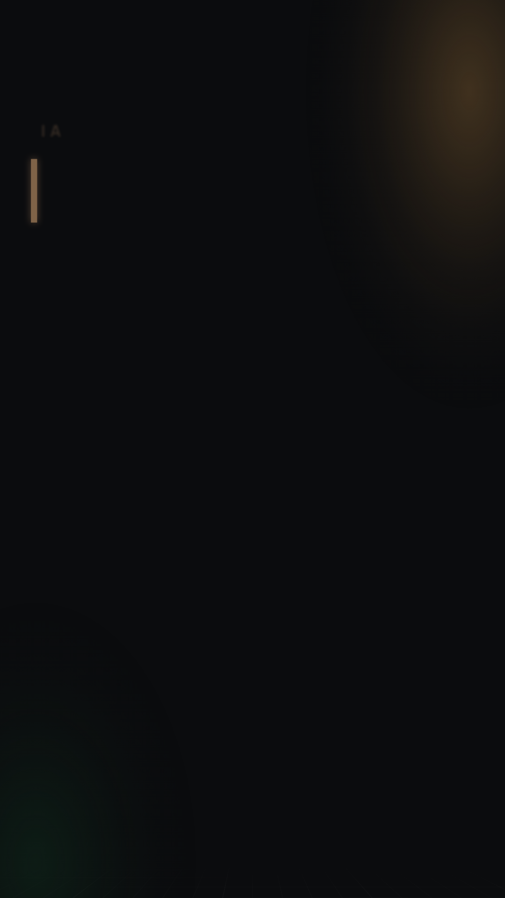
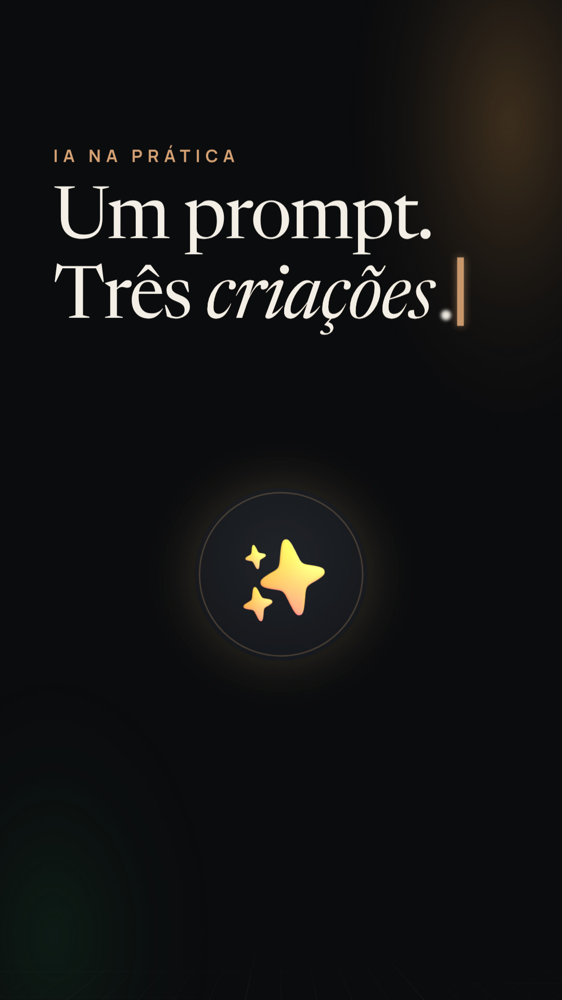

O gancho
Um cursor dourado pisca no escuro e escreve a promessa; a palavra 'criações' acende e, dela, os três ícones saltam para a órbita em volta da IA.


- 0,0 s Tipografia O cursor pisca duas vezes (macio, 250 ms) e escreve 'Um prompt.' palavra a palavra, cada uma saindo do desfoque.
- 0,5 s Tipografia 'Três criações.' entra na batida; o itálico dourado é varrido da cor do texto para o dourado em 450 ms.
- 0,75 s Objeto A faísca da IA nasce quente no centro, cresce de 70 % com mola curta e o aro dourado se desenha em volta.
- 1,0 s Objeto Notebook, controle, celular, robô e foguete saltam do aro para a órbita em accelerando (90 → 40 ms), com um estalo pequeno cada; a linha tracejada corre atrás.
- 1,5 s Vida no hold Hold: os ícones flutuam devagar na órbita, cada um no seu período; a luz âmbar respira; o rodapé RR @ramosraul.ia sobe.
- 2,25 s Transição Corte no eixo: o título sai acelerando pela câmera e o cursor fica — ele é o primeiro quadro da próxima.